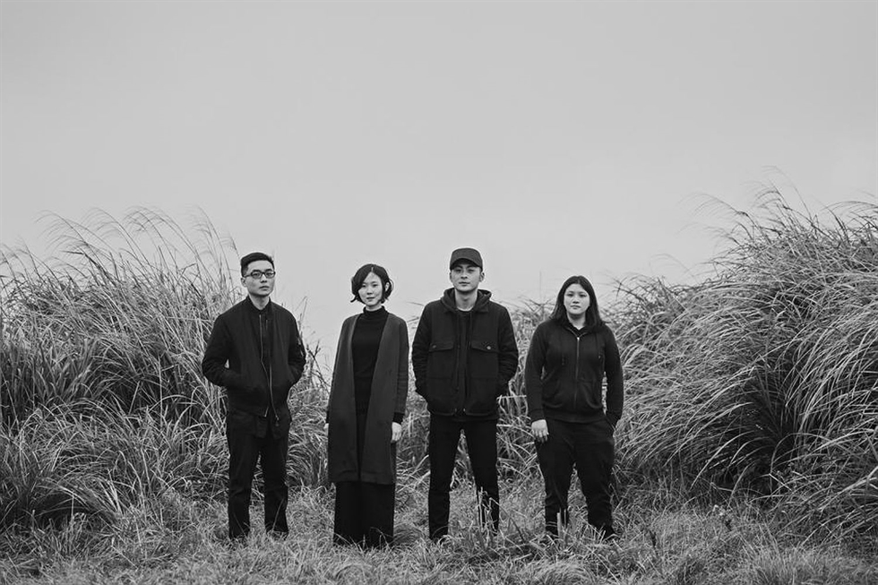

草 东 没 有 派 对
No Party for Cao Dong
No Party for Cao Dong is an indie rock band from Taiwan currently consisting of Wood Lin (vocals and guitar), Judy Chan (guitar), Sam Yang (bass). Drummer Fan Tsai died in October of 2021.
In 2015, the band self-released an EP which sold out in a single day. On May 20, they made their return to the stage with their first major concert We Were All Born to Our Mothers. Starting from September that year, tickets to their performances at various small venues would often sell out quickly.
In 2016, the band released the first album The Servile, which gained widespread attention among professional critics.
On June 24, 2017, they won a total of three awards at the 28th Golden Melody Awards, namely Best Musical Group, Best New Artist and Song of the Year.
In 2021, the band planned to hold their concert for the first time at the Taipei Arena on May 22. 11,000 tickets were sold out in less than a minute.